Project 5: Face Detection with a Sliding Window
This project uses a sliding window technique to dectect faces in images. To accomplish this we first collect Hog-features for both positive and negative samples and train a linear svm to detect a face and not a face. Then we implement a multiple-scale detector, which slides a fixed size window across a test image to detect faces.
- Features from positive and negative sample
To extrat features from positive samples, I used two variations of each image. The first was the original image. Next, I added uniform noise between 0-20 to the original image. Having two varints of the image gave more features to learn from. In addition, I used a hog-cell size of 5 and template-size of 35. With a smaller cell-size there are more features which aid in learning (as shown in Image 2 below).
There were two stages to extracting features from negative sample. The first stage was pre-classifier training. In the first stage, I took the negative samples and cropped them inorder for the size of image to match the template set by the positive samples. Each image is randomly scaled from 0.8-1 and cropped multiple times. Hog-features are extracted for each crop. Scaling the negative images tuned the dataset better for multi-scale detection. I also tuned the datasize to 12000 sample data to match the size of positive samples to remove biases from prediction.
- SVM
A linear svm is trained with the features from positive and negative samples. The data spread as a function of confidence is shown below. We can notice that most of the positive data has confidence > 0. Also, included below is a learned hog-feature template. We can see a clear definition of face in the template. This template was learnt using template-size=35 and cell-size=5. I have included a template-size-36, cell-size=6 template learnt from svm. Using the former improved the average precision by 5%
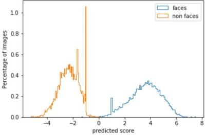Image 1: data spread for positive and negative samples
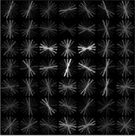 template learnt template-size=35 cell-size=5

template learnt template-size=35 cell-size=5
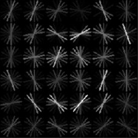
template learnt template-size=36 cell-size=6
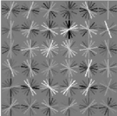
template learnt template-size=36 cell-size=6
Image 2: Learnt Hog templates
For final testing a C value of 5e-2 is used. Using a C value of 1e-4 gives the following result
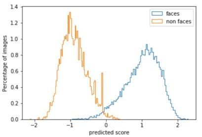
data spread for svm trained with C=1e-4
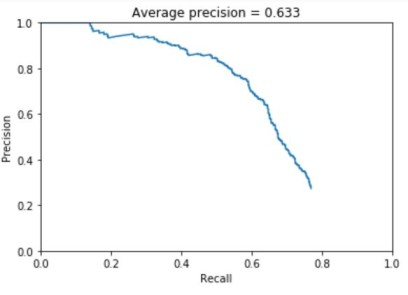
face detector precision recall for svm trained with C=1e-4
Image 3: Experiment learning with C=1e-4
- Mining hard negative
After training a classifier, we use this classifier to mine heard negatives. Again, I scaled each image randomly between 0.5-1 and cropped template-sized images. For each crop if the svm predicts a positice score, the crop is stores as a hard negative. We combine the hard negatives with the original negatives and train a new classifier. As seem in Image 4 using hard negative didn't affect the average precision.
- Mulitpe scale Detection
Firstly, a single scale detector is implemented by first transforming each image into a hog-feature space and then stepping in the space one step at a time. At each step we classify the feature as a face or not. We collect all features in an image above -1 confidence and run non-maximal supression to remove duplicates and return the windows where face is detected. For multiple scale the same steps are repeated at four scales - 0.9, 0.5, 0.3, 0.25. In multiple-scale detection, increasing the features considered for NMS increased AP by 10%.
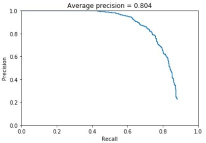
Precision-recall curve w/out hard negative
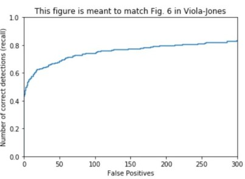
recall curve w/out hard negatives
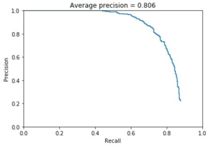
Precision-recall curve w/out hard negative
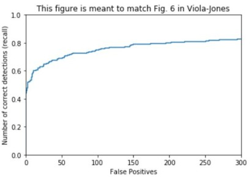
recall curve w/out hard negatives
Image 4: Results for multi-scale face detector
- Sample detections
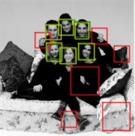
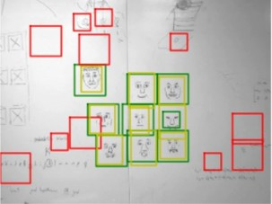
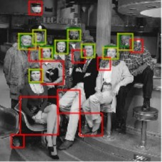
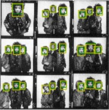
Image 5: Sample face detections